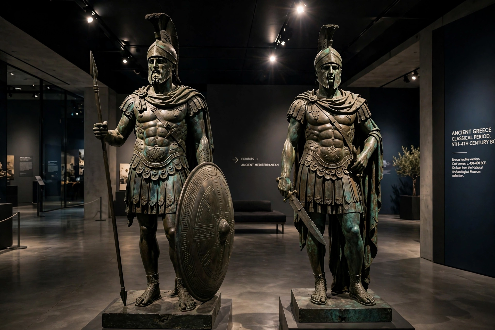

Riace bronzes
| Riace bronzes | |
|---|---|
| Material | Bronze, with copper, silver, ivory/calcite inlays |
| Height | Statue A: 1.98 m; Statue B: 1.97 m |
| Created | c. 460–450 BC (attributed variously) |
| Discovered | 16 August 1972, off Riace Marina, Calabria |
| Present location | Museo Nazionale della Magna Grecia, Reggio Calabria |

The Riace bronzes (Italian: Bronzi di Riace), also called the Riace Warriors, are two full-size Greek bronze statues of naked bearded warriors, cast about 460–450 BC, that were found in the sea in 1972 near Riace, Calabria, in southern Italy. The bronzes are now in the Museo Nazionale della Magna Grecia in the nearby city of Reggio Calabria. They are among the very few surviving full-size bronze originals from classical Greece, most of which are known only through Roman marble copies.
Discovery
On 16 August 1972, Stefano Mariottini, a Roman chemist diving on holiday, spotted the statues in the Ionian Sea about 200 metres off Riace Marina at a depth of eight metres. The statues were recovered by the Carabinieri's underwater unit days later, to great public excitement. Conspiracy theories about their transport and a possible shipwreck have circulated ever since; no wreck has been located, and the leading theory is that the statues were jettisoned — perhaps en route to be melted down — in antiquity. Their shields and spears were never recovered.
Description
The two figures, conventionally Statue A (the "younger", about 1.98 m) and Statue B (the "older", about 1.97 m), stand in relaxed contrapposto, originally holding spear and shield. They are extraordinarily naturalistic: teeth of silver, lips and nipples of copper, eyes inlaid with ivory, calcite and glass paste. Statue A wears a broad headband; Statue B once wore a Corinthian helmet resting on the head. The casting is refined, using the lost-wax process with unusually thin walls for figures of this size.
Origin and attribution
Scholars have attributed the bronzes to sculptors of the Severe style era — names proposed include Phidias, Myron, Onatas of Aegina and Pythagoras of Rhegion — and to workshops in Athens, Argos or Magna Graecia. Clay from the casting cores has been analysed to constrain the origin, with results argued both for Greek mainland and other sources. The pair may represent heroes or athletes, possibly from the same monument; their identity remains debated.
Conservation
After years of restoration in Florence — removing marine concretions and the internal casting core — the bronzes were displayed in Florence and Rome in 1981 (drawing enormous crowds) before reaching Reggio Calabria. A major conservation programme in 2009–2013 saw them cleaned lying horizontally in a special facility; they are now exhibited on anti-seismic bases in a climate-controlled room, on permanent display since 2014.